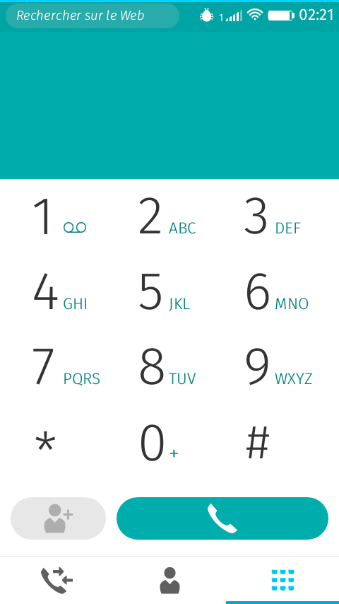

Firefox OS
Le système d’exploitation mobile libre
Théo Chevalier – Capitole du Libre 2014 – Toulouse
about:me

- Étudiant en Master MIAGE à Toulouse
- Contributeur Mozilla
REGARDEZ L’AVENIR
Firefox OS
Un système d’exploitation mobile
conçu à l’aide de technologies web ouvertes

Enfin disponible en France !
L’accueil du logiciel libre
Firefox OS, pour qui ?
- Premier smartphone
- Smartphone pas cher
- Système simple d’utilisation
Pourquoi Firefox OS ?
Quelques souvenirs…
- Qui misait sur Firefox ?
Combattre les silos
- Applications web
- Pas d’enfermement
- Ne pas être la nième plate-forme spécifique
Des mesures simples
Gestion des nouvelles versions
iOS 8.0.1
Des naissances compliquées…
« Allez, t’en ferais pas un peu des caisses ? »
Firefox OS 1.3
- Développement terminé : 17 mars
- Commercialisé en juillet
ZTE en France
- Ça s’améliore
- Il reste du boulot
Changements à venir
Nouveau cycle de développement
- À partir de Firefox OS 2.2
- 24 novembre 2014 — 18 mai 2015
Compilations par la communauté
- 2.0, 2.1, 2.2
- Mise à jour automatique
Prochaines évolutions
Navigateur intégré !
Écran d’accueil vertical
Navigation privée
Navigation latérale
Gestionnaire de téléchargements
Centre de notifications
Mais aussi…
- Copier/coller
- NFC
- Zoom, retardateur, HDR pour l’appareil photo
- Localiser mon apareil
- Thèmes
- …
Et à plus long terme
- Intégration plus poussée du navigateur
- Découpler les applications système de l’OS
- Permettre la mise à jour de Gecko
- Paquets linguistiques
Vision actuelle
- Évolutions rapides en 2014
- Début de phase de différenciation
- Maturité : début de montée en gamme
Langues de Firefox OS 2.1
- 74 langues en cours de traduction
- 42 langues complètes à ce jour
- Dont 25 validées par Mozilla
Firefox 33.1
Bouton effacer
DuckDuckGo

Débogage multi-plateformes
Polaris

Protection contre le pistage
Et puis…
- Firefox 64 bits sous Windows
- e10s (1 processus par onglet)
Comment contribuer ?
Tester les versions expérimentales
Signaler les problèmes
bugzilla.mozilla.org
Développer Firefox OS
www.joshmatthews.net/bugsahoy
Développement web
https://github.com/mozilla/bedrock
https://github.com/mozfr
Développer des applications
Aider les utilisateurs
forum.mozfr.org
Traduire et réviser

Traduire et réviser
- Les sites web
- La lettre d’information
- Les logiciels
- L’aide
- La documentation
Et si je n’aime pas ce qui est technique ?
Rejoindre le groupe communication de la communauté
Lancer ou assister à des évènements
Faire connaître le système
Rejoindre la communauté francophone
mozfr.org/participer